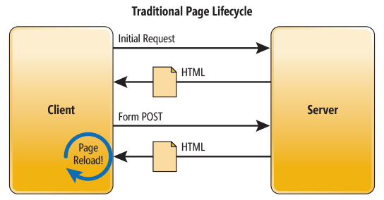
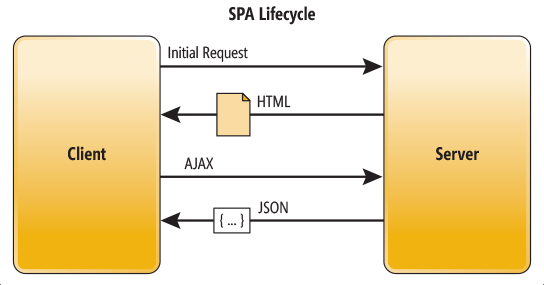
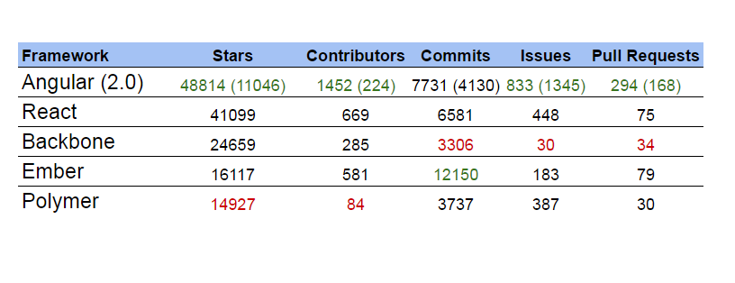

JavaScript
Java and Javascript are similar like Car and Carpet are similar.
What is JavaScript?
Interpreted programming language
Designed to make Web pages interactive
Open and Cross-platform
!Java (Not A Java!!!)
Little bit boring...
History
Brendan Eich
Eich wrote scripting language in 10 days, in May 1995.
JavaScript’s first code name was Mocha
Netscape marketing later changed it to LiveScript.
Netscape's several products already had the prefix “Live.”
In early December 1995, language was renamed again to JavaScript
Due to momentum growing of Java
What can be done with JavaScript?
Web applications
Mobile applications
Desktop applications
Drones ...
Why JavaScript?
Less server interaction
Immediate feedback to the visitors
Increased interactivity
Richer interfaces
From Web pages to Web applications
Web pages (traditional client/server communication)
Web pages/sites
jQuery
Underscore
Prototype
D3
...
Web applications (SPA)
Web applications
Angular 2.0
React
Backbone
Ember
Polymer
Let's compare them
Angular Pros
Two-way data binding
DOM manipulation
Faster application prototyping
Highly testable products
The Plain HTML templates
Angular Cons
Difficult learning
The scopes
Other difficult features
Possible time consumption

React Pros
Light-weighted
Components
DOM and data changes
JSX
Easy to master
React Cons
JSX
Just library
Not MVC/MVVM/MV*
JavaScript + Backend = Node.js
Node.js!?
Not a framework, it’s a server.
V8
Open source, cross platform
Asynchronous, event driven I/O APIs
And all of this is JavaScript
When to use Node.js
Web Socket Server
Fast file upload client
Data streaming
Ad server
Stock exchange software
What about mobile apps?
PhoneGap/Cordova
Ionic
React Native
"Hybrids" pros
Easy to code
Cross-platform
Easy to compile
"Hybrids" cons
Buggy external libraries
Debug == Pain
Easy to compile
"Native" pros
Build with js for js developers
Native controllers
Cross-platform
Easy to debug
"Native" cons
Build process
Just increasing number of components